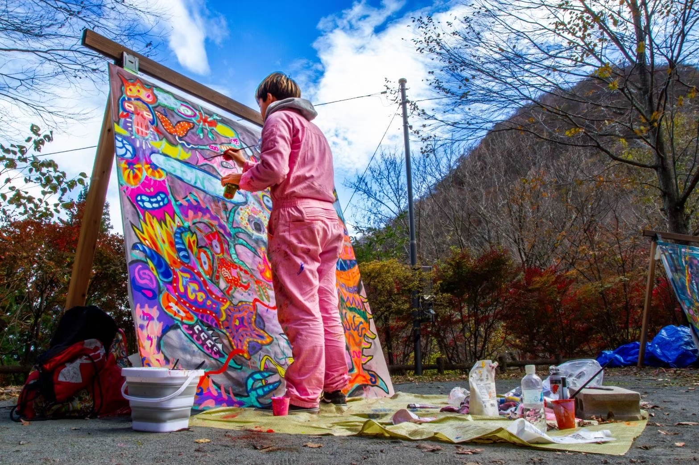

About
Rin Sato
佐藤 倫
Biography
Rin Sato 2003年北海道生まれ。 5歳からアート教室で絵を学び、10歳で初めて絵の依頼を受けて以来、依頼が途切れることなく続いている。 2021年、テンプル大学ジャパンキャンパスに入学し、美術を専攻。 制作や展示に力を入れる中、アメリカ本校での留学も経験し、初めての個展をアメリカで成功させた。 帰国後は国内外での展示に加え、ライブペイントや壁画制作、スポンサーの支援を受けたプロジェクトにも携わり、幅広い活動を展開している。 作品は生き物の儚さと共存をテーマに、生命が生きている間、そして死後も喜びや勇気、幸福感を持ち続ける可能性を探求することに焦点を当てている。 今後も依頼が止まらない中、さらなる海外進出を視野に入れ、精力的に活動を続けている。
Rin Sato was Born 2003 in Hokkaido, Japan, Rin Sato studied painting in art classes from the age of five and received his first commission at the age of 10, and has been receiving commissions ever since. 2021, he enrolled at Temple University, Japan Campus, majoring in art. While focusing on production and exhibition, he also studied abroad at the American main campus and had her first successful solo exhibition in the USA. Since returning to Japan, in addition to exhibiting in Japan and abroad, he has been involved in a wide range of activities, including live painting, mural painting and projects supported by sponsors. His work focuses on the theme of the fragility and co-existence of living things, and explores the possibility of life holding on to a sense of joy, courage and happiness during life and after death. With an unstoppable flow of commissions, he continues to work energetically with a view to further international expansion.
Artist Statement
生き物はやがて死んでしまうが、私の作品は、人間を含む生き物が生 きている間、そしておそらく死んだ後も、いかに喜びや勇気、幸福感 を持ち続けることができるかに焦点を当て、共存という概念を考察し ている。その幸福感を表現するために、私は明るく鮮やかな色彩を使っ ています。私にとって、絵を描くことは楽しいことであり、私の絵に もその喜びが反映されていることを願っています。私の絵の登場キャ ラクターや人物のように、常に変化し成長し続けるスタイルを、私は 「rinstyleart」と呼んでいる。 私の絵の登場する物の多くは想像上のものですが、私の絵は地球温暖 化、戦争、子供たちを守る必要性といった現実の問題にも触れています。 これらは世界に影響を与える大きな問題であり、アートが意識を高め、 変化を促す助けになると信じている。私が使っている色は、見る人に これらの課題に立ち向かう勇気を与えることを意味している。 最近、私は今日の世界におけるアートの役割に疑問を抱くようになっ た。アートがこのような世界的な問題にどのように取り組むことがで きるのだろうかと。私は自分自身にこのような問いを投げかけ、鑑賞 者にもこのような問いについて考えてもらうようにしている。 アクリル絵の具を使うのは、色を通して感情を表現し、層と深みを作 り出すことができるからだ。私が犯したミスのひとつひとつが絵の歴 史の一部となり、絵の意味を高めていく。私の目標は、人々を感動さ せるだけでなく、世界の問題解決にも役立つようなアートを作ること です。
Creatures eventually die, but my work examines the concept of coexistence, focusing on how the creatures including human beings can continue to have joy, courage, and happiness while they are alive, and perhaps even after they die. I use bright, vivid colors to express this sense of happiness. For me, making art is enjoyable, and I hope my paintings reflect that joy. I call my evolving style “rinstyleart,” as it is always changing and growing, just like the characters in my paintings. Even though many of my characters are imaginary, my art also touches on real issues like global warming, war, and the need to protect children. These are big issues that affect the world, and I believe art can help raise awareness and inspire change. The colors I use are meant to give viewers the courage to face these challenges. Recently, I’ve started questioning the role of art in today’s world. This questioning has become part of my work, as I wonder how art can address these global issues. I ask myself these questions, and I also invite viewers to think about them too. I use acrylic paint because it allows me to create layers and depth, showing emotions through color. Each mistake I make becomes part of the painting’s history, adding to its meaning. My goal is to create art that not only moves people emotionally but also helps solve some of the world’s problems.
2021 テンプル大学ジャパンキャンパスに入学 アート専攻 在学中
個展
2024 Tyler School of Art and Architecture、 Temple University、フィラデルフィア 、アメリカ2025 「Symbiosis 展」 KOMAGOME 1-14cas、東京
2025 「IROIRO NA IRO」CLOVE GARDEN HOTEL&RESIDENCE、バントン、インドネシア
グループ展
2023 「エネルギーアート展」アートストーンギャラリー、東京2023 「TUJ ARTISTS 展」デザインフェスタギャラリー、東京
2024 「Mission World Tour Exhibition」First Wish Art Gallery、ヒルフェルスム , オランダ
2025 「Mission World Tour Exhibition」First Wish Art Gallery、マドリード、スペイン
受賞歴
2023 「第１０７回二科展」 入選 国立新美術館、東京2023 「第１２回躍動する現代作家展」 新人賞受賞 （一般社団法人空間芸術 TORAM、 代表 田畑 豊氏）国立新美術館、東京
2023 「第５１回近代日本美術協会展」 入選 東京美術館、東京
その他
2022 ウクライナ支援募金活動 (オリジナル T シャツデザインやバッグ制作販売) Sankeys PENTHOUSE、東京2023 GENSHI（実験的野外パーティー、ライブペイント）いわきの里 鬼ヶ城、福島
2023 GENSHI（実験的野外パーティー、メスティンデザイン）いわきの里 鬼ヶ城、福島
2023 GENSHI（実験的野外パーティー、ライブペイント）利平茶屋森林公園キャンプ場、東京
2023 屋外ビジョン広告 （DIY マーケティングラボ、スポンサー代表 三木 聖子氏）、東京
2024 岩槻リサイクルセンター壁画アートプロジェクト、（株式会社藤榮商事、社長 新藤 友啓氏）、埼玉
2025 テンプル大学ジャパンキャンパス (ライブペイント) テンプル大学ジャパンキャンパス 京都、京都
2025 壁画、CLOVE GARDEN HOTEL&RESIDENCE、バントン、インドネシア
メディア
2023 テンプル大学ジャパンキャンパス Youtube (Chasing Dreams Ep 1: Rin Sato - The Painter)2024 Yahoo! ニュース（みんなの経済新聞）、「岩槻リサイクルセンター壁画アートプロジェクト」
2024 浦和経済新聞、「岩槻リサイクルセンター壁画アートプロジェクト」
2024 きらりいわつき、「壁面アートプロジェクト - 岩槻リサイクルセンター｜ 2024年11月12日（火）10 時〜」
2024 東京新聞、「生命躍動 壁面アート 岩槻のリサイクル施設にお目見え 地元の大学生リン・サトウさん、環境保全の願い込め制作」
2024 PR TIMES、「リサイクル業界のイメージ刷新！学生アーティストが描く明るく鮮やかな「壁面アート」を公開」
2024 アコレおおみや、 岩槻の新名所に。岩槻リサイクルセンターに地元学生アーティストが描く「壁面アート」誕生
2024 NHK ラジオ （ひるどき！さいたま〜ず）
2025 時事通信映像センター（米テンプル大が京都に新拠点）